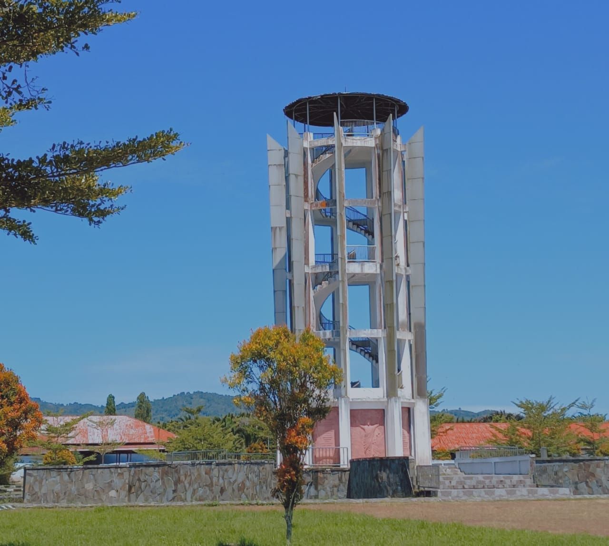
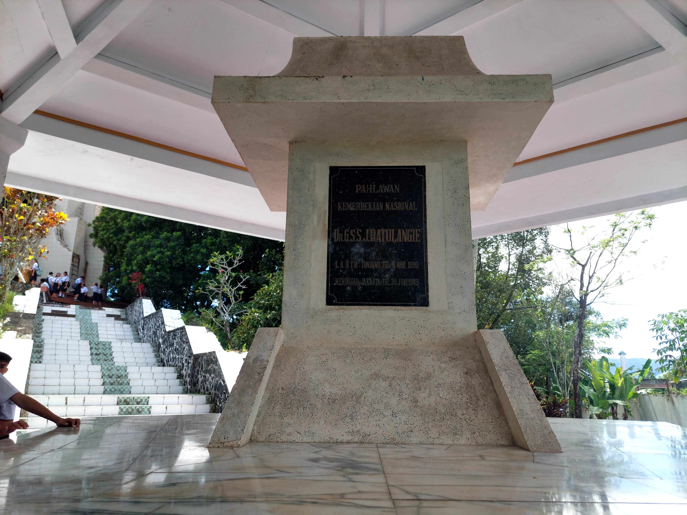

Tempat Bersejarah di Tondano, Sulawesi Utara
Benteng Moraya
Benteng Moraya adalah situs bersejarah yang terletak di Tondano, Sulawesi Utara. Benteng ini memiliki nilai sejarah yang tinggi dan merupakan saksi bisu perjuangan masyarakat Minahasa melawan penjajahan Belanda pada abad ke-19.
Makam Dr. GSSJ Ratulangi
Makam Dr. GSSJ Ratulangi terletak di Tondano, Sulawesi Utara. Dr. Sam Ratulangi adalah pahlawan nasional Indonesia yang berasal dari Sulawesi Utara dan dikenal sebagai tokoh penting dalam perjuangan kemerdekaan Indonesia.